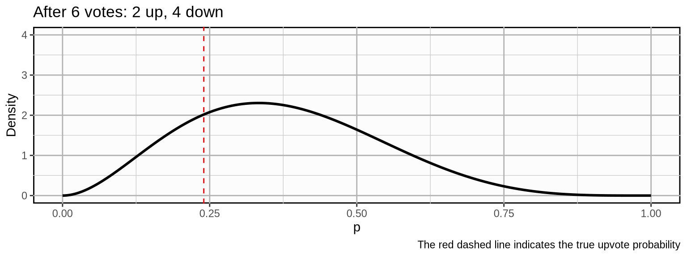
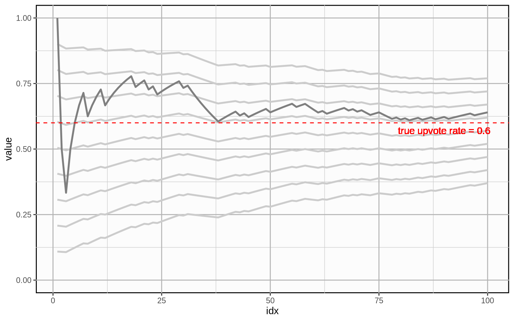

5 Modeling Upvote Probability
Given a tally of votes at a certain point in time, we can calculate the upvote ratio at that time \(t\) which is given by \(upvotes:downvotes\). We can also express it as the fraction of upvotes over all votes:
\[ \frac{upvotes}{upvotes + downvotes} \]
You can think about the upvote fraction as an average vote or as the probability of a vote being an upvote (we will mostly call this the upvote probability). We model votes as a Bernoulli distributed random variable with successes given by upvotes and failures given by downvotes. If we encode upvotes with a value of \(1\) and downvotes with a value of \(0\), a sample post’s gathered votes at a certain point in time \(t\) might look like this:
\[ (1, 0, 0, 0, 1, 0, 0, 0, 0, 1, 0, 0) \]
The post has gathered a total of 12 votes of which 3 are upvotes and 9 are downvotes. The upvote fraction or the average vote for this sample is:
\[ \text{upvoteFraction} = \frac{\sum_{i=1}^n x_i}{n} = \frac{upvotes}{upvotes + downvotes} = \frac{3}{3 + 9} = 0.25 \]
5.1 The Beta-Binomial Model
We assume that each post has a “true” upvote probability that we can only estimate by collecting votes. Votes are modeled as a Bernoulli random variable with parameter \(p\) that denotes our upvote probability. Upvote probility is modeled as a Beta distribution. The Beta distribution has two shape parameters \(\alpha\) and \(\beta\) which in our case are given by our upvote and downvote counts.
\[ u_i \sim \text{Bernoulli}(p) \\ p \sim \text{Beta}(upvotes, downvotes) \]
Example
To provide a more intuitive understanding of how this distribution models our upvote probability, let’s see how our beliefs about the true upvote probability develop for an example post when we collect more and more votes. Let’s say we have a post with a true upvote probability of \(0.24\). We initialize the distribution with a prior of 1 upvote and 1 downvote. This is equivalent to a uniform distribution which means we assign equal weight to any upvote probability.
Now, we observe some votes.
\[ (\color{limegreen}{1, 0, 0}) \]
\[ (\color{grey}{1, 0, 0,} \color{limegreen}{0, 1, 0}) \]

\[ (\color{grey}{1, 0, 0, 0, 1, 0,} \color{limegreen}{0, 0, 0}) \]
\[ (\color{grey}{1, 0, 0, 0, 1, 0, 0, 0, 0,} \color{limegreen}{1, 0, 0}) \]
As we update our beliefs, the probability mass becomes more concentrated which means we become more and more certain about our beliefs about the true upvote probability. If the post would develop further with a similar trajectory, the following could be the outcome after 500 votes:
Our probability mass is now pretty concentrated around (what in this case we know to be) the true upvote probability.
5.2 Naive Point Estimate
Now that we can express our beliefs about the upvote probability, how do we make a “best guess” at any given point in time? A naive way of estimating the upvote probability is to take the actual current ratio \(upvotes:downvotes\), or rather the fraction, which is equivalent to the plain sample average vote:
\[ P_t(upvote) = \frac{\sum_{i=1}^n x_i}{n} = \frac{upvotes}{upvotes + downvotes} \]
This solution is naive because it ignores an important fact: In the beginning, we do not take into consideration any prior information about the upvote probability of the post. Thus, when the post does not yet have a lot of votes, each new arriving vote has an outsized effect on our estimate that only gets increasingly small over time. This would result in erratic estimates in the beginning which would only smooth out over time. Here is how the cumulative mean develops for a random vote history with a true upvote rate of \(0.6\):
If we were to use this metric to compare posts, getting a high upvote probability estimate in the early stages of a post would essentially come down to luck. It will temporarily fare overly well or overly poorly compared to other posts and the estimate will only get better over time once we have more votes on the post. We have to take into account prior information to avoid this.
5.3 The Bayesian Average
The Bayesian Average uses a weighted prior estimate of the average to avoid the erratic shifts in the estimate when there is not a lot of data. It is calculated as…
\[ \frac{\color{blue}{C \cdot m} + \sum_{i=1}^n x_i}{\color{blue}{C} + n} \]
… where \(C\) is a weight constant and \(m\) is our prior belief about the average. If you compare it to the plain average, we simply add \(C \cdot m\) to the nominator and \(C\) to the denominator.
But what does this achieve in concrete terms?
Let’s build up to this formula step by step for estimating the true upvote probability of a post. First, remember that the sample upvote fraction can be thought of as the “plain” average vote. In our case, this means:
- \(\sum_{i=1}^n{x_i} = upvotes\) is the number of upvotes
- \(n = upvotes + downvotes\) is the total number of votes
Substituting the values in the Bayesian average formula gives us:
\[ \frac{C \cdot m + \sum_{i=1}^n x_i}{C + n} = \frac{C \cdot m + upvotes}{C + upvotes + downvotes} \]
Adding these terms to our formula means that we calculate the cumulative average as if we had collected \(C\) votes with an upvote rate of \(m\) before we collected the first vote on our post.
If our prior belief about the average is \(0.68\) and we chose a weighting factor of, say, \(100\), this would mean that we calculate the average as if we had previously collected \(100\) data points which amounted to an upvote fraction of exactly \(0.68\).
Plugging in the values makes this apparent:
\[ \frac{100 \cdot 0.68 + upvotes}{100 + upvotes + downvotes} = \frac{68 + upvotes}{100 + upvotes + downvotes} \]
Graphically, it looks like this (the light grey line is the plain average for comparison):
The cumulative Bayesian average is much less erratic when little data is available. However, there is an important question left: How do we chose a good prior and a good weight?
Here is how the Bayesian average develops for different prior beliefs about the average. Bayesian averages over time are indicated by light grey lines, the priors chosen here are \(0.1\) through \(0.9\) and the weight is kept constant at \(20\). The plain average is overlayed in darker grey for reference.
And here is that same plot with the same priors, but with a weight of \(100\).

5.4 The Bayesian Hierarchical Model
We can estimate the global priors \(C\) and \(m\) using a Bayesian Hierarchical model.
Our beliefs about the upvote probability for each post can be modeled using a Beta distribution. Our prior beliefs for each post are the same: a Beta distribution with a mean \(m\) and sampleSize \(C\).
As we collect data for each post, we can use this not only to update our beliefs about the post, but also to update our beliefs about the global prior. After collecting a lot of data for a lot of posts, we will obviously have a good idea of what the global mean \(m\) is. But how do we estimate \(C\)?
To be able to form and update beliefs about C using a Bayesian approach, we need to have priors beliefs about C. The same for \(m\) as a matter of fact. Our priors \(m\) and \(C\) are our beliefs before we have any data at all.
It’s reasonable for the global hyperprior for \(m\) to be a uniform distribution: any upvote probability is equally likely before we have any data about any posts.
We also need a hyperprior for \(C\). This one is tricky. It’s essentially our prior beliefs about how much variation there will be in upvote probabilities for different posts. If it is very high, then no matter what data we observe for a post, the posterior for that post will be close to the global prior \(m\).
It’s hard to say much about the hyperprior for \(C\) except that it should probably be a positive number and, by experience, between 2 and 10. A gamma or exponentially distribution is often used for this type of model (for reasons I should understand better). So we’ll choose a weak gamma prior and add 2.
So we have a hierarchical model that looks like this:
- \(m \sim \text{Uniform}(0, 1)\)
- \(C \sim \text{Gamma}(2, 2)\)
- \(q \sim \text{Beta'}(m, C)\)
- \(Z \sim \text{Binomial}(n, q)\)
Where
$q is the upvote probability for the post
$Z is the number of upvotes on the post
$n is total number of votes on the post
\(\text{Beta`}\) is a Beta distribution parameterized using mean and sample size instead of \(α\) and \(β\), using the conversions:
- \(\alpha = mean \times sampleSize\)
- \(\beta = (1 - mean) \times sampleSize\)
Using methods such as MCMC, we can estimate the posterior of the entire joint probability distribution, giving us an estimate for the upvote probability for each post, and a mean and weight for the global prior.
5.4.1 Approximating the Mean Upvote Probability
However, we don’t need to rerun the MCMC simulation every time we collect more vote data for a post. Once we have an estimate for \(m\) and \(C\), we can treat these as fixed constants. This let’s us chop of one level of our hierarchy. Now for each post, we have a simple standard Beta-Binomial model.
- \(q \sim \text{Beta'}(m, C)\)
- \(Z \sim \text{Binomial}(n, q)\)
Where \(m\) and \(C\) are constants.
For a Beta-Binomial model is simply:
\[ Beta(α+upvotes,β+votes-Z) \]
The mean of the posterior is
\[ \frac{α + Z}{α + β + n} \]
Which we can rewrite using the above conversions as:
\[ \frac{sampleSize \cdot mean + upvotes}{sampleSize + votes} \]
Using our globalPrior of \(mean=m\) and \(sampleSize=C\) gives us our formula for the Bayesian Average:
\[ \frac{sampleSize \cdot mean + upvotes}{sampleSize + votes} \\ = \frac{C \cdot m + upvotes}{C + votes} \]